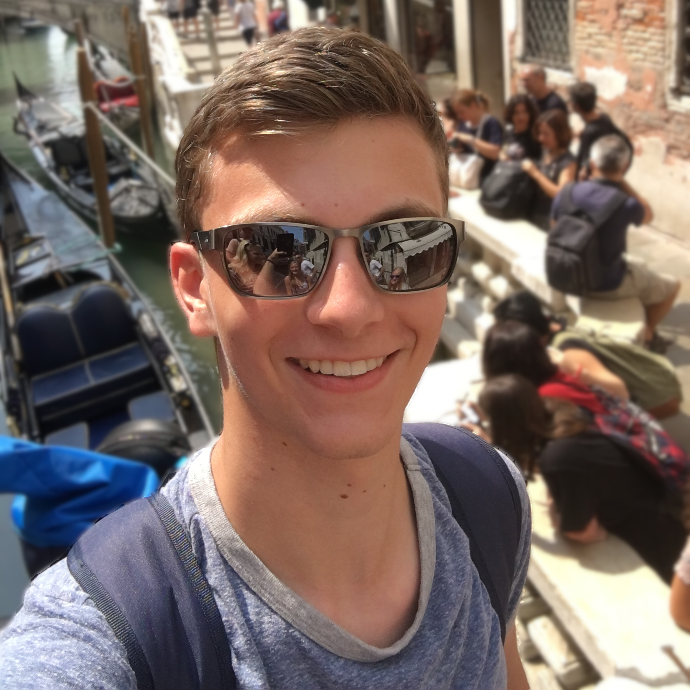
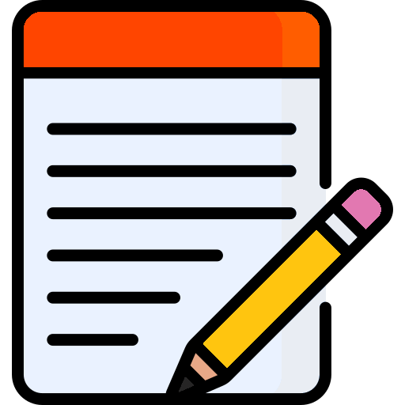
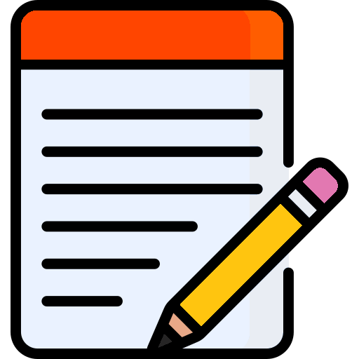
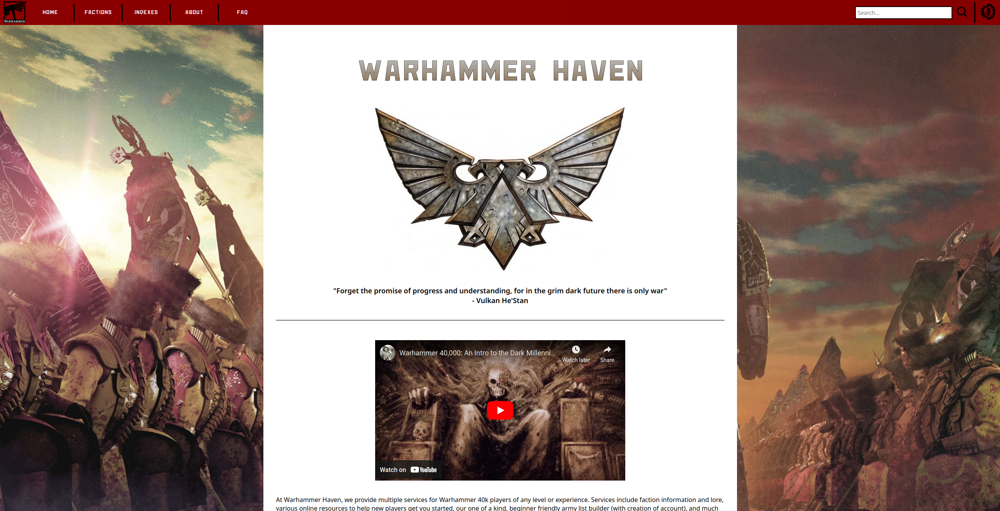
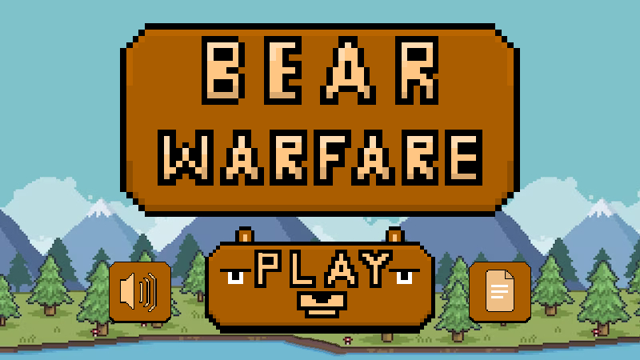

Hey, I'm Tyler Sobojinski. Here, you can check out what I've put together. I try my best to create things with
Contact:
sobojinskit@gmail.com
About
Note icon created
by Freepik - Flaticon 
by Freepik - Flaticon 
Hey there! I'm Tyler Sobojinski, a computer science student at UWEC with a passion for exploring new tools and technologies. This website is actually a product of that enthusiasm! Whether it's HTML/CSS, diving into C, C++, Rust, Python, Java, or whatever I'm interested in at the time, or whatever aligns best with the thing I'm looking to create — I'm always tinkering with whatever suits my curiosity or the project at hand.
Beyond the code, I'm a huge fan of storytelling in all forms. You'll catch me watching movies, shows, playing video games, or reading books, especially anything Tolkien. His works on Middle-earth, in any medium, never fail to captivate me. I'm always on the lookout for stories and creations that blend artistic vision with a sense of wonder. Looking ahead, my goal is to keep pushing myself to craft better, more impactful software while discovering unique, inspiring works along the way.
Experience
Project management icon created
by kliwir art - Flaticon
by kliwir art - Flaticon
Research Assistant
Summer 2024
UW - Eau Claire, Wisconsin
Eau Claire, Wisconsin
- Conducted research focused on using natural language processing (NLP) techniques to classify and label sentences into categories.
- Assisted in developing and refining machine learning models for sentence classification tasks, including data pre-processing, feature extraction, and model evaluation.
- Collected and annotated large datasets of academic and argumentative texts to train and validate NLP models.
- Utilized Python and popular NLP libraries such as NLTK, spaCy, and Hugging Face Transformers to implement text processing pipelines and classification algorithms.
Teaching Assistant
Spring 2024
UW - Eau Claire, Wisconsin
Eau Claire, Wisconsin
- Assisted in the development and grading of assignments and projects.
- Provided feedback and guidance to students on coursework, improving academic performance.
- Collaborated with faculty on curriculum design, instructional materials, and course improvements.
- Encouraged critical thinking and problem-solving skills in students through hands-on activities and discussions.
Education
School icon created
by Freepik - Flaticon
by Freepik - Flaticon
Bachelors of Computer Science
UW - Eau Claire, Wisconsin
In Progress, Winter 2024
Projects
https://github.com/dreadvisage
Project icon created
by Freepik - Flaticon
by Freepik - Flaticon
Warhammer Demo Website
During a university group project, I dove deep into web development using HTML, CSS, and JavaScript for the first time as a cohesive, unified effort. This project was powered by XAMPP, and I took on the challenge of integrating PHP for server-side scripting and database management. One of the most exciting parts was implementing the Damerau-Levenshtein Algorithm in JavaScript, which allowed me to create a highly responsive and reactive search bar.
This experience introduced me to the dynamic interactions between front-end and back-end development, showing me how these technologies work together to create a seamless user experience. By managing databases and integrating PHP, I gained a solid understanding of how to handle data flow in web applications. Overall, this project was a significant step in building my confidence with full-stack development and furthered my ability to solve complex problems creatively.
Bear Warfare
One of my university group projects involved building a web-based game using Phaser, a JavaScript game library, hosted through XAMPP, with HTML/CSS for the front-end design. Throughout this project, I became well-versed in integrating various tools like Visual Studio Code, Git, and XAMPP, each serving as a crucial component in the development process. I learned how to manage version control effectively with Git, ensuring a smooth collaboration and tracking of code changes. XAMPP introduced me to the basics of local server management, which deepened my understanding of web hosting and server-side operations.
Developing the game using Phaser helped sharpen my JavaScript skills, while crafting the user interface with HTML/CSS allowed me to refine my front-end development abilities. Overall, this project not only enhanced my technical proficiency but also taught me how to balance multiple tools and technologies to bring a project to completion—making me a more versatile and efficient software developer.